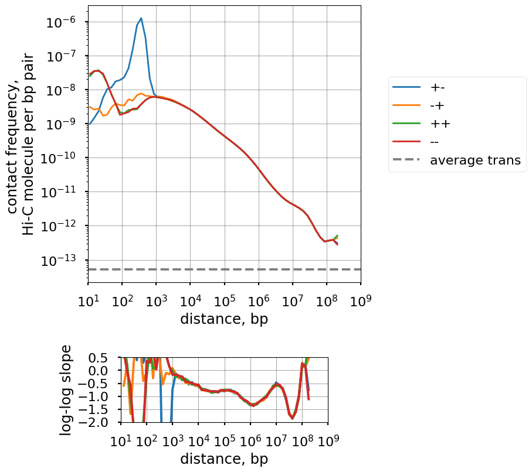

[1]:
!wget https://osf.io/download/crgu8/ -O ./tmp/test.pairs
--2023-12-18 23:04:28-- https://osf.io/download/crgu8/
Resolving osf.io (osf.io)... 35.190.84.173
Connecting to osf.io (osf.io)|35.190.84.173|:443... connected.
HTTP request sent, awaiting response... 302 FOUND
Location: https://files.de-1.osf.io/v1/resources/638ue/providers/osfstorage/623993788d53ef082867e2b9 [following]
--2023-12-18 23:04:28-- https://files.de-1.osf.io/v1/resources/638ue/providers/osfstorage/623993788d53ef082867e2b9
Resolving files.de-1.osf.io (files.de-1.osf.io)... 35.186.249.111
Connecting to files.de-1.osf.io (files.de-1.osf.io)|35.186.249.111|:443... connected.
HTTP request sent, awaiting response...
302 Found
Location: https://storage.googleapis.com/cos-osf-prod-files-de-1/b72f21bb7e21d00541fb3cbc50ef77d67b75970f7d255912ca527fb4c8e5cc0a?response-content-disposition=attachment%3B%20filename%3D%22test_pairs.wp-all.pairs%22%3B%20filename%2A%3DUTF-8%27%27test_pairs.wp-all.pairs&GoogleAccessId=files-de-1%40cos-osf-prod.iam.gserviceaccount.com&Expires=1702937129&Signature=0tM4rWv5RPZjFTYCKzHNbOZoInW3EOidpN5eHp1mlQv%2BWxUbUQ%2BqHDqVmJB4afWQ9CeQpovADOp%2BHNDVxr4GhotEENmyAd7GGdoGRkS%2FeSXM3G1hLxR5H3S5kBWfTVk57pRUXu%2FNj%2FZXOTJo5zKizIdmYlpPZ%2BDZZJvfXuExR3G6OWXcM3P7ufpFe6d53ZxiqpyhxIKVOU4uYo7zwFyxxofGrd5DONsz53sEH15S%2Fc84emZrxaFiQW5%2FEaupoEtLJQHcFc5au3fh8wApS4gtTU%2FDkINvnkyEDXyxND7%2FJDfQ0xJRRjelDXuFVHHDxbIqIfVhQnFK0QMEmlyoBLax1g%3D%3D [following]
--2023-12-18 23:04:29-- https://storage.googleapis.com/cos-osf-prod-files-de-1/b72f21bb7e21d00541fb3cbc50ef77d67b75970f7d255912ca527fb4c8e5cc0a?response-content-disposition=attachment%3B%20filename%3D%22test_pairs.wp-all.pairs%22%3B%20filename%2A%3DUTF-8%27%27test_pairs.wp-all.pairs&GoogleAccessId=files-de-1%40cos-osf-prod.iam.gserviceaccount.com&Expires=1702937129&Signature=0tM4rWv5RPZjFTYCKzHNbOZoInW3EOidpN5eHp1mlQv%2BWxUbUQ%2BqHDqVmJB4afWQ9CeQpovADOp%2BHNDVxr4GhotEENmyAd7GGdoGRkS%2FeSXM3G1hLxR5H3S5kBWfTVk57pRUXu%2FNj%2FZXOTJo5zKizIdmYlpPZ%2BDZZJvfXuExR3G6OWXcM3P7ufpFe6d53ZxiqpyhxIKVOU4uYo7zwFyxxofGrd5DONsz53sEH15S%2Fc84emZrxaFiQW5%2FEaupoEtLJQHcFc5au3fh8wApS4gtTU%2FDkINvnkyEDXyxND7%2FJDfQ0xJRRjelDXuFVHHDxbIqIfVhQnFK0QMEmlyoBLax1g%3D%3D
Resolving storage.googleapis.com (storage.googleapis.com)... 142.251.37.123, 142.251.36.91, 142.251.36.123, ...
Connecting to storage.googleapis.com (storage.googleapis.com)|142.251.37.123|:443... connected.
HTTP request sent, awaiting response... 200 OK
Length: 564902846 (539M) [application/octet-stream]
Saving to: ‘./tmp/test.pairs’
./tmp/test.pairs 100%[===================>] 538.73M 163MB/s in 3.5s
2023-12-18 23:04:33 (156 MB/s) - ‘./tmp/test.pairs’ saved [564902846/564902846]
[2]:
%load_ext autoreload
%autoreload 2
[3]:
import warnings
warnings.filterwarnings("ignore")
import numpy as np
import pandas as pd
import matplotlib.pyplot as plt
import matplotlib.ticker
import matplotlib.gridspec
%matplotlib inline
plt.style.use('seaborn-poster')
import pairtools
import pairtools.lib.scaling as scaling
import bioframe
[4]:
pairs_path = './tmp/test.pairs'
[5]:
mm10_chromsizes = bioframe.fetch_chromsizes('mm10', as_bed=True)
mm10_arms = mm10_chromsizes
# hg38_chromsizes = bioframe.fetch_chromsizes('hg38', as_bed=True)
# hg38_cens = bioframe.fetch_centromeres('hg38')
# hg38_arms = bioframe.split(hg38_chromsizes, hg38_cens, cols_points=['chrom', 'mid'])
[6]:
cis_scalings, trans_levels = scaling.compute_scaling(
pairs_path,
regions=mm10_arms,
chromsizes=mm10_chromsizes,
dist_range=(10, 1000000000),
n_dist_bins_decade=8,
chunksize=int(1e7),
#cmd_in="gzip -dc "
)
# calculate average trans contact frequency _per directionality pair_
# convert from int to float64 to avoid overflow
avg_trans = (
trans_levels.n_pairs.astype('float64').sum()
/ trans_levels.n_bp2.astype('float64').sum()
)
[7]:
fig = plt.figure(figsize=(6,10))
gs = matplotlib.gridspec.GridSpec(2,1, height_ratios=[8, 1.5])
ax1 = fig.add_subplot(gs[0,0])
ax2 = fig.add_subplot(gs[1,0])
strand_gb = cis_scalings.groupby(['strand1', 'strand2'])
for strands in ['+-', '-+', '++', '--']:
sc_strand = strand_gb.get_group(tuple(strands))
sc_agg = (sc_strand
.groupby(['min_dist','max_dist'])
.agg({'n_pairs':'sum', 'n_bp2':'sum'})
.reset_index())
dist_bin_mids = np.sqrt(sc_agg.min_dist * sc_agg.max_dist)
pair_frequencies = sc_agg.n_pairs / sc_agg.n_bp2
mask = pair_frequencies>0
label = f'{strands[0]}{strands[1]}'
ax1.loglog(
dist_bin_mids[mask],
pair_frequencies[mask],
label=label,
lw=2
)
ax2.semilogx(
np.sqrt(dist_bin_mids.values[1:]*dist_bin_mids.values[:-1]),
np.diff(np.log10(pair_frequencies.values)) / np.diff(np.log10(dist_bin_mids.values)),
label=label
)
ax1.axhline(avg_trans, ls='--', c='gray', label='average trans')
plt.sca(ax1)
plt.gca().set_aspect(1.0)
plt.gca().xaxis.set_major_locator(matplotlib.ticker.LogLocator(base=10.0,numticks=20))
plt.gca().yaxis.set_major_locator(matplotlib.ticker.LogLocator(base=10.0,numticks=20))
plt.xlim(1e1,1e9)
# plt.ylim(avg_trans / 3, plt.ylim()[1])
plt.grid(lw=0.5,color='gray')
plt.legend(loc=(1.1,0.4))
plt.ylabel('contact frequency, \nHi-C molecule per bp pair')
plt.xlabel('distance, bp')
plt.sca(ax2)
plt.xlim(1e1,1e9)
plt.ylim(-2,0.5)
plt.gca().set_aspect(1.0)
plt.ylabel('log-log slope')
plt.xlabel('distance, bp')
plt.yticks(np.arange(-2,0.6,0.5))
plt.gca().xaxis.set_major_locator(matplotlib.ticker.LogLocator(base=10.0,numticks=20))
plt.grid(lw=0.5,color='gray')
# fig.tight_layout()

[ ]: